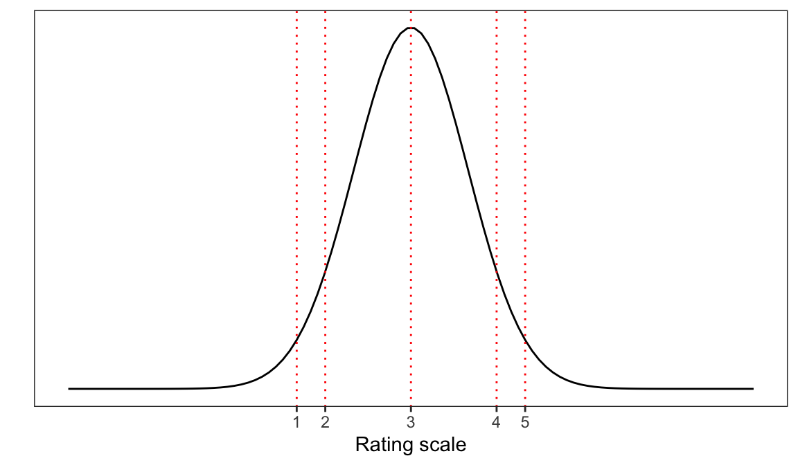

7 Introduction to Ordinal Models
This chapter is under construction
7.1 Motivations: working with ordinal outcomes
Ordinal data are very common in psychological science. Often, we will encounter ordinal data recorded as responses to Likert-style items in which the participant is asked to indicate a response on an ordered scale ranging between two end points (Bürkner & Vuorre, 2019; Liddell & Kruschke, 2018). An example of a Likert question item might be: How well do you think you have understood this text? (Please check one response) where the participant must respond by checking an option, given 5 options ranging from 1 (not well at all) to 5 (very well). The critical characteristics of such responses are that:
- The responses are ordered, as indicated by the number labels;
- Response types are categorical or qualitative, not numeric.
We will be working with study data in which the outcome that is the target for our analyses comprise responses to questions designed to elicit ratings. Ordinal data may, however, also derive from situations in which ordered categorical responses do not derive from ratings items (we will look briefly at sequential responses, Bürkner & Vuorre, 2019).
The challenge we face is that we will aim to develop skills in using ordinal models when, in contrast, most psychological research articles will report analyses of ordinal data using conventional methods like ANOVA or linear regression. We will work to understand why ordinal models are better. We will learn that applying conventional methods to ordinal data will, in principle, involve a poor account of the data and, in practice, will create the risk of producing misleading results. And we will learn how to work with and interpret the results from ordinal models with or without random effects.
In our work in this chapter, we will rely extensively on the ideas set out by Liddell & Kruschke (2018), see Section 7.13.
7.2 The key idea to get us started
Ordinal responses are labelled with numbers but ordinal data are not numeric.
Ordinal responses are coded with numeric labels. These number labels may indicate order but we do not know that the difference between e.g. response options 1 versus 2 is the same as the difference between 2 versus 3 or 3 versus 4. Ordinal data contrast with metric data (Liddell & Kruschke, 2018) which are recorded on scales for which we assume both order and equal intervals. When researchers apply metric models to ordinal data, they incorrectly assume that the response options e.g. in ratings are separated by equal intervals. Yet, in a review of the 68 recently articles that mentioned the term “Likert” in a sample of highly ranked Psychology journals, Liddell & Kruschke (2018) found that ordinal data were treated as metric and the articles presented results from metric models.
One way to think about ordinal data is that often (but not always) ratings may be understood to come from psychological processes in which the participant, in response to the Likert question, divides some latent (unobserved) psychological continuum or scale into categories in order to select a response option. Imagine, for example, that you have been asked the question “How well do you understand this text? (on a scale from 1-5)”. Presumably, to answer this question, you will have to choose a response based on where you think you are on your unobserved measure of your understanding.
You may be able to evaluate the cohesion, or some other internal measure, of your understanding of the text. Simplifying a bit, we might assume that your internal measure of understanding is associated with a normal probability distribution so that it peaks over some value (e.g., 3) of the strength of understanding though other values are possible. As Figure 7.1 suggests, a participant in this common situation will have to map the internal measure (the latent scale, e.g., of understanding) to a number from the response options you are given (e.g., rating scale values ranging 1-5). But there is no reason to suppose that your internal measure of your understanding is divided into an ordered metric scale.

In conducting analyses of ordinal data with ordinal models, we often fit models that describe the cumulative probability that a rating response is located at some value (typically, understood in terms of threshold) on an underlying latent continuum. In ordinal models, we do not assume that the ordinal responses map to equally spaced intervals on the latent scale: the values or thresholds at which the continuum are split are to be estimated.
In applying metric models to ordinal data, we do assume that intervals are equal though this assumption is unlikely to be true or, at least, is unlikely to be verifiable. This faulty assumption has consequences. Because the mis-application of metric models (e.g. ANOVA, linear models) to ordinal data is both commonplace and risky. As Liddell & Kruschke (2018) demonstrate, mis-applying metric models to ordinal data can result in false positives (detecting a difference when none is present), false negatives (missing a difference that is present) and inversions (swapping the difference so that is positive instead of negative or vice versa).
These kinds of misrepresentions cannot be avoided and are not fixed by, for example, averaging ratings scales data together.
7.3 Targets
- Understand practically the reasons for using ordinal models when we analyze ordinal outcome variables, Section 7.8.2.
- Practice running ordinal models with varying random effects structures.
- Practice reporting the results of ordinal models, including through the use of prediction plots.
7.4 Study guide
I have provided a collection of materials you can use. Here, I explain what they are and how I suggest you use them.
1. Chapter: 05-ordinal
1.1. I have written this chapter to discuss the main ideas and set out the practical steps you can follow to start to develop the skills required to work with ordered categorical outcomes i.e. ordinal data using ordinal models.
1.2. The practical elements include data tidying, visualization and analysis steps.
1.3. You can read the chapter, run the code, and do the exercises.
- Read in the example dataset.
- Experiment with the .R code used to work with the example data.
- Run ordinal models of demonstration data.
- Run ordinal models of alternate data sets.
- Review the recommended readings (Section 7.13).
2. Practical workbook materials
2.1 In the following sections, I describe the practical steps, and associated resources, you can use for your learning.
7.5 The data we will work with:
We will be working, at first, with a sample of data collected as part of the Clearly understood: health comprehension project (Davies, Ratajczak, Gillings, Chadwick & Gold). These data are unpublished.
7.5.1 Study information
7.5.1.1 Introduction: the background for the study
Our interest, in conducting the project, lies in identifying what factors make it easy or difficult to understand written health information. In part, we are concerned about the processes that health providers or clinicians apply to assure the effectiveness of the text they produce to guide patients or carers, for example, in taking medication, in making treatment decisions, or in order to follow therapeutic programmes.
It is common, in the quality assurance process in the production of health information texts, that text producers ask participants in patient review panels to evaluate draft texts. In such reviews, a participant may be asked a question like “How well do you understand this text?” This kind of question presents a metacognitive task: we are asking a participant to think about their thinking. But it is unclear that people can do this well or, indeed, what factors determine the responses to such questions (Dunlosky & Lipko, 2007).
For these reasons, we conducted studies in which we presented adult participants with sampled health information texts (taken from health service webpages) and, critically, asked them to respond to the question:
How well do you think you have understood this text? (Please check one response)
For each text, in response to this question, participants were asked to click on one option from an array of response options ranging from (1) Not well at all to (9) Extremely well. The data we collected in this element of our studies comprise, clearly, ordinal responses. Thus, we may use these data to address the following research question.
- What factors predict self-evaluated rated understanding of health information.
7.5.1.2 Participants
We will work with a sample of participant data drawn from a series of Lancaster University undergraduate dissertation studies connected to the Clearly understood project. In these studies, we collected data from 202 participants on a series of measures (Section 7.5.1.3) of vocabulary knowledge, health literacy, reading strategy, as well as responses to health information texts. The distributions of participants’ scores on each of a range of attribute variables
![The figure presents a grid of histograms indicating the distribution of (x-axis) scores on a range of participant attribute variables. The grid includes histograms of the distributions of: self-rated accuracy; vocabulary (SHIPLEY); health literacy (HLVA); reading strategy (FACTOR3); age (years); gender; education, and ethnicity. The plots indicate: (1.) most self-rated accuracy scores are high (over 6); (2.) many participants with vocabulary scores greater than 30, a few present lower scores; (3.) health literacy scores centered on 8 or some, with lower and higher scores; (4.) a skewed distribution of reading strategy scores, with many around 20-40, and a tail of higher scores; (5.) most participants are 20-40 years of age, some older; (6.) many more female than male participants, very few non-binary reported; (7.) many more participants with higher education than further, very few with secondary; and (8.) many White participants (ONS categories), far fewer Asian or Mixed or Black ethnicity participants.](05-ordinal_files/figure-html/fig-histogram-grid--1.png)
The plots indicate:
- most self-rated accuracy scores are high (over 6);
- many participants with vocabulary scores greater than 30, a few present lower scores;
- health literacy scores centered on 8 or some, with lower and higher scores;
- a skewed distribution of reading strategy scores, with many around 20-40, and a tail of higher scores;
- most participants are 20-40 years of age, some older;
- many more female than male participants, very few non-binary reported;
- many more participants with higher education than further, very few with secondary;
- and many White participants (Office of National Statistics categories), far fewer Asian or Mixed or Black ethnicity participants.
7.5.1.3 Stimulus materials and data collection procedure
We collected data through an online survey administered through Qualtrics.
We used the Shipley vocabulary sub-test (Shipley et al., 2009) to estimate vocabulary knowledge.
We used the Health Literacy Vocabulary Assessment (HLVA, Ratajczak, 2020; adapted for online presentation, Chadwick, 2020) to estimate health literacy.
We used an instrument drawn from unpublished work by Calloway (2019) to assess the approach participants took to reading and understanding written information.
We presented participants with a sample of 20 health information texts. In the data collection process for this dataset, participants were recruited in multiple different studies. In each study, any one participant was presented with a randomly selected subset of the total of 20 texts.
We asked participants to rate their level of understanding of the health-related texts that we presented in the study. We used a nine-point judgment scales because they have been found to outperform alternative scales with fewer categories in terms of criterion validity, internal consistency, test-retest reliability, and discriminating power (Preston & Colman, 2000).
We recorded participants’ demographic characteristics: gender (coded: Male, Female, non-binary, prefer not to say); education (coded: Secondary, Further, Higher); and ethnicity (coded: White, Black, Asian, Mixed, Other).
7.5.2 Locate and download the data file
You can download the 2021-22_PSYC304-health-comprehension.csv file holding the data we analyse in this chapter by clicking on the link.
7.5.3 Read-in the data file using read_csv
I am going to assume you have downloaded the data file, and that you know where it is. We use read_csv to read the data file into R.
health <- read_csv("2021-22_PSYC304-health-comprehension.csv",
na = "-999",
col_types = cols(
ResponseId = col_factor(),
rating = col_factor(),
GENDER = col_factor(),
EDUCATION = col_factor(),
ETHNICITY = col_factor(),
NATIVE.LANGUAGE = col_factor(),
OTHER.LANGUAGE = col_factor(),
text.id = col_factor(),
text.question.id = col_factor(),
study = col_factor()
)
)Notice that we use col_types = cols(...) to require read_csv() to class some columns as factors.
Importantly, we ask R to treat the rating variable as a factor with rating = col_factor().
In the practical work we do, we will be using functions from the {ordinal} library to model ordinal data.
- In using these functions, we need ask R to treat the ordinal outcome variable as a factor.
7.5.4 Inspect the data
It is always a good to inspect what you have got when you read a data file in to R. Here, what may most concern us is the distribution of observed responses on the rating scale (responses to the “How well do you understand?” question).
health <- health %>% mutate(rating = fct_relevel(rating, sort))
health %>%
group_by(rating) %>%
summarise(count = n()) %>%
ggplot(aes(x = rating, y = count, colour = rating)) +
geom_point(size = 3) +
scale_color_viridis(discrete=TRUE, option = "mako") + theme_bw() +
theme(
panel.grid.major.y = element_blank() # No horizontal grid lines
) +
coord_flip()
7.6 Tidy the data
7.6.1 Code categorical factors
7.7 Introduction to thinking about the need for generalized models
7.8 Our focus is on the analysis of catgorical outcome variables
7.8.1 Recognize the limitations of alternative methods for analyzing response accuracy
7.8.1.1 Accuracy is bounded between 1 and 0, linear model model predictions or confidence intervals are not
7.8.1.2 ANOVA or regression require the assumption of homogeneity of variance but for binary outcomes like accuracy the variance is proportional to the mean
7.8.1.3 Summary: Recognize the limitations of traditional methods for analyzing response accuracy
7.8.2 Understanding the Generalized part of the Generalized Linear Mixed-effects Models in practical terms
7.9 Working with Cumulative Link Mixed-effects Models in R
7.9.1 Specify a random intercepts model
In our first model, we will specify just random effects of participants and items on intercepts.
The code works as follows.
First, we have a chunk of code mostly similar to what we have done before, but changing the function.
glmer()the function name changes because now we want a generalized linear mixed-effects model of accuracy.
The model specification includes information about fixed effects and about random effects.
- With
(1 | Participant)we include random effects of participants on on intercepts. - With
(1 | Word)we include random effects of stimulus on on intercepts.
Second, we have the bit that is specific to generalized models.
family = "binomial"is entered because accuracy is a binary outcome variable (correct, incorrect) so we assume a binomial probability distribution.
We then specify:
glmerControl(optimizer="bobyqa", ...)to change the underlying mathematical engine (the optimizer) to cope with greater model complexity
- and we allow the model fitting functions to take longer to find estimates with
optCtrl=list(maxfun=2e5).
Notice how we specify the fixed effects. We want glmer() to estimate “main effects and interactions” that we hypothesized.
We specify the main effects with:
We specify the interaction effects with:
7.9.2 Read the results
If you run the model code, you will get the results shown in the output.
7.9.2.1 Ordinal models and hypothesis tests
7.9.3 Presenting and visualizing the effects
7.10 Examining if we should include random effects
7.10.0.1 Getting started
The question is:
- So, what random effects should we include?
7.10.0.2 Random effects of subjects and stimulus items on intercepts
7.10.0.3 Random effects of subjects and stimulus words on the slope of the Orthography effect
7.10.0.4 Random effects of subjects and stimulus words on the slope of the Instructions effect
7.10.0.5 Adding effects a bit at a time
7.10.0.6 Random effects of subjects on the slope of the consistency effect
7.10.0.7 Random effects of subjects and stimulus words on the slope of the time effect
7.10.1 Bad signs
7.10.2 Comparison of models varying in random effects
7.10.3 Addressing convergence problems
7.10.3.1 Exercises
7.10.3.2 Summary advice
7.11 Reporting model results
7.12 Summary
7.12.1 Glossary: useful functions
7.13 Recommended reading
The published example studies referred to in this chapter are published in (Ricketts et al., 2021; Rodríguez-Ferreiro et al., 2020).
Liddell & Kruschke (2018) present a clear account of the problems associated with treating ordinal data as metric, and explain how we can better account for ordinal data.
Bürkner & Vuorre (2019) present a clear tutorial on cumulative and sequential ratio models.
Both Liddell & Kruschke (2018) and Bürkner & Vuorre (2019) work from a Bayesian perspective but the insights are generally applicable.
Guides to the {ordinal} model functions clm() and clmm() are presented in (Christensen, 2022; Christensen, 2015).